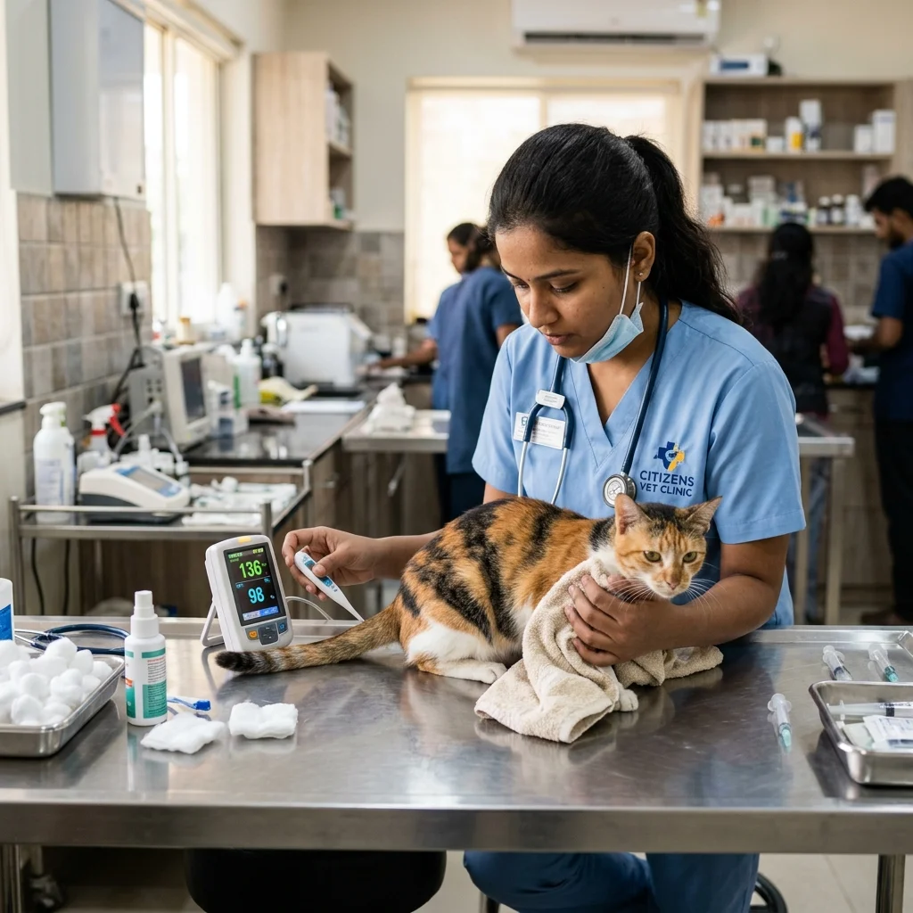
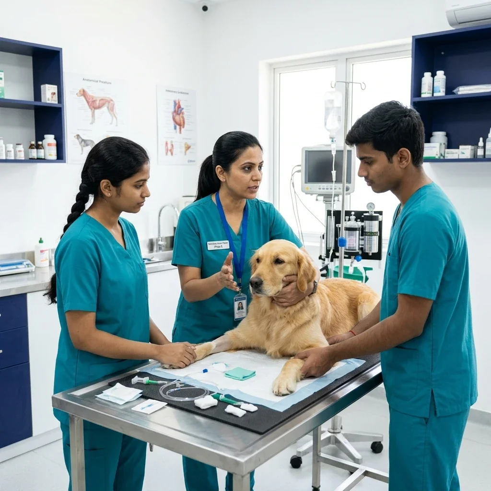
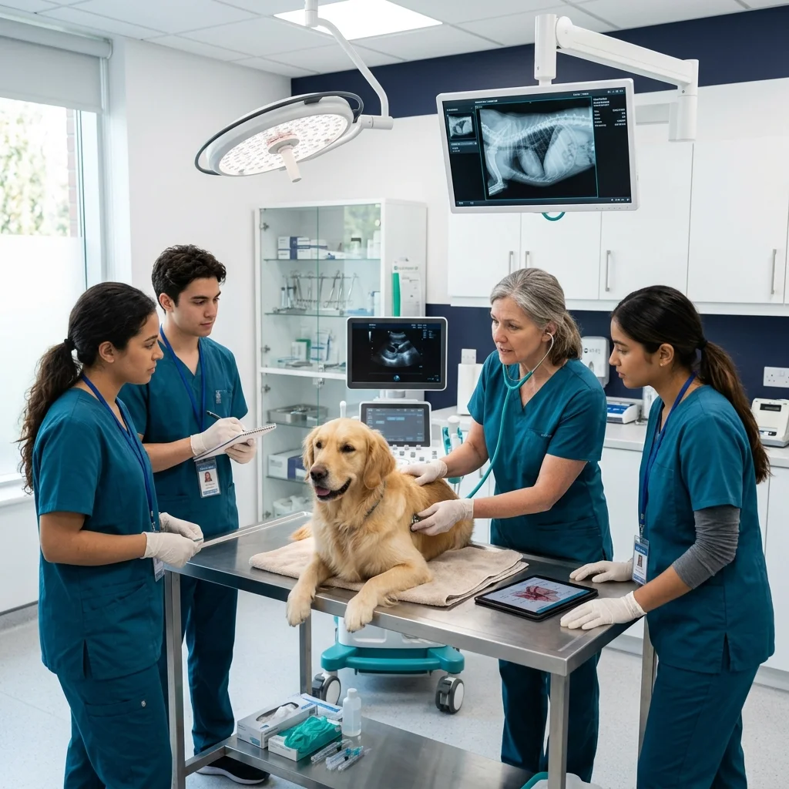

Vet Nurse Foundation & Clinical Assistant Certificate
Build high-demand veterinary nursing competencies through practical training in low-stress animal restraint, patient vital monitoring, operating theater preparation, IV drug administration, and hospital ward management.
- Low-Stress Canine & Feline Restraint
- Patient Vital Signs & Anesthetic Monitoring
- Surgical Pack Autoclaving & OT Scrub Support
- IV Catheter Assistance & Drug Administration
- Hospital Ward Hygiene & Record Management

🐾 Low-Stress Handling 👩⚕️ Senior Vet Mentors 🩺 OT Sterilization Prep ⭐ 4.9 Student RatingThe Skilled Paravet Shortage in Clinics
Why modern veterinary hospitals rely heavily on formally trained veterinary nurses for flawless clinical operations.

From Informal Assistance to Professional Clinical Nursing
Veterinary doctors depend on skilled clinical nursing staff to manage patient care, operating theater preparation, and ward sanitization. Untrained clinic assistants face daily operational bottlenecks:
Your Before → After Learning Journey
See your starting point and the practical clinical confidence you can expect to develop through the program.
BEFORE
STARTING POINT- Informal clinic assistant knowledge with fear of animal bites during handling
- Uncertainty during surgical pack autoclaving & operating theater scrub prep
- Hesitation when assisting with IV catheter placement or monitoring patient vitals
- Need for structured supervised practical training in hospital nursing protocols
VETNOVA TRAINING
PRACTICAL PHASES- 60 hours of hands-on low-stress animal restraint & clinical nursing support
- Repetitive surgical instrument tray preparation, autoclaving & OT scrub protocols
- Supervised IV catheter placement assistance & fluid rate calculation drills
- Hospital ward hygiene management, patient recovery care & record keeping
AFTER
DEVELOPED SKILLS- Developed safe, low-stress animal handling & clinical assistant confidence
- Greater understanding of full hospital nursing workflow & surgical team support
- Independent veterinary nurse assistant readiness under clinic standards
- Clearer next steps & nursing career progression roadmap
What You'll Graduate Ready To Do
Develop practical confidence through structured clinical exposure, supervised procedures, and hospital-standard veterinary training.

70+ Clinical Nursing SessionsClinical Transformation
- Basic assisting background
- Limited vital monitoring experience
- Passive ward support
- Unsure of surgical pack sterilization
- Proactive ICU patient monitoring
- Sterile OR assistant protocols
- Sample collection mastery
- Professional ward management
Patient Care & Triage
Master vital signs assessment, TPR measurement, CRT checks, and low-stress restraint.
Vital Monitoring
Operate pulse oximeters, ECG monitors, temperature management, and fluid pumps.
Sample Collection
Perform venipuncture positioning, blood smear preparation, and urinalysis setup.
Operation Assistance
Prepare surgical instrument packs, operate steam autoclaves, and scrub patient OR sites.
Ward Management
Manage hospital isolation wards, kennel sanitization, fluid line maintenance, and feeding protocols.
Clinical Documentation
Maintain patient treatment logs, medication charts, and shift handover records accurately.
Your Practical Learning Journey
What your 2-week veterinary nursing learning experience actually looks like on campus.
Learn
Master low-stress canine & feline behavior cues, vital sign ranges, sterile OT prep principles, and clinic hygiene standards.
Practise
Execute gentle towel wraps, muzzle placements, surgical pack autoclaving, and IV catheter assist drills on simulation models.
Apply
Assist senior veterinarians during live outpatient examinations, surgical scrub prep, anesthetic monitoring, and patient recovery.
Demonstrate
Validate your clinical assistant competency through practical nursing evaluations and earn your foundation certificate.
Vet Nurse Course Syllabus
Step-by-step 2-week practical curriculum designed for maximum hands-on hospital task execution.
Animal Behavior, Low-Stress Restraint & Vitals
Understanding canine/feline body language, Fear-Free handling, towel wraps, muzzle positioning, and vital sign measuring.
- Recognizing stress signals, aggression signs, and defensive feline postures.
- Canine cephalic, saphenous, and jugular vein restraint techniques.
- Feline burrito wrap, cat bag usage, and Elizabethan collar fitting.
- Practical Lab: 15+ hours live animal handling and TPR monitoring practice.
Operating Theater Prep, Sterilization & Scrubbing
Mastering autoclave sterilization, instrument tray organization, patient surgical site shaving/scrubbing, and circulating nurse duties.
- Autoclave pouching, chemical indicator strips, and sterile pack shelf life.
- Patient surgical prep: Clipper technique, chlorhexidine/povidone scrub protocol.
- Circulating nurse role: Opening sterile packs, adjusting surgical lights, monitoring fluids.
- Practical Lab: Complete OT scrub suite setup and sterilization drills.
Medication Administration & Laboratory Support
Preparing prescribed oral/topical/subcutaneous medications, IV catheterization assist, fluid drip calculation, and basic lab tests.
- Preparing IV fluid bags, infusion set priming, and drip rate (drops/min) math.
- Assisting veterinarians during IV catheter placement and tape securing.
- Sample collection assist: Blood tube handling (EDTA, Serum), urine strip testing.
- Practical Lab: Drip rate calculation drills and lab centrifuge operation.
Hospital Ward Management, Hygiene & Communication
Managing hospital inpatient wards, infection control isolation protocols, patient record keeping, and client discharge updates.
- Kennel sanitization, biohazard waste disposal, and hospital cross-contamination prevention.
- Inpatient care charts: Daily food/water intake, urination, defecation, and medication logs.
- Client communication: Explaining post-op wound care instructions and medication schedules.
- Practical Lab: Simulated hospital ward management capstone evaluation.
Nursing Training Delivery
Designed for fast-paced practical skill building with direct mentor guidance.
100% Practical Facility
Equipped with dedicated clinical exam tables, autoclaves, and patient treatment wards.
Small Batch Learning
Strictly capped at 12 nursing trainees per batch for 1-on-1 instructor coaching.
60 Practical Hours
80% of course time spent performing animal handling, OT prep, and vitals recording.
Job Placement Assistance
Direct hiring connections with leading veterinary hospitals and clinics across India.
Who Should Join
Ideal for anyone aspiring to build a career in professional veterinary nursing and hospital care.
Clinic Assistants & Paravets
Formalize your hospital experience with recognized credentials and advanced nursing skills.
Animal Care Aspitants
Start a rewarding career in veterinary healthcare with zero prior medical background required.
Shelter & NGO Staff
Upgrade animal rescue handling, wound care, and disease isolation protocols in shelter wards.
Hospital Managers
Sponsor junior staff training to standardize hospital nursing protocols and hygiene standards.
Learn directly from Experienced Veterinary Clinicians & Instructors
Our veterinary nursing course is guided by senior veterinarians who instruct low-stress handling, sterile OT scrub preparation, and hospital ward hygiene in small batches of max 12 trainees.
Meet Our Faculty


Recognized Nursing Certificate
Upon successful completion of the 2-week course and practical nursing assessment, trainees receive an official VetNova Certificate of Achievement in Veterinary Nursing.
Program Fee & Payment Options
Affordable tuition fee. Includes all training scrubs, nursing manuals, and lab supplies.
Vet Nurse Foundation Certificate
2-Week Offline Practical Nursing Module
- 60 Hours hands-on clinical lab access
- Complete nursing manual & scrub top included
- 1-on-1 Practical instructor feedback
- Verified course completion certificate
- Job placement assistance & referral support
Upcoming Practical Batches
Strictly capped at 12 participants per batch for hands-on mentor guidance.
Upcoming batch not scheduled
Don't see a suitable date for the Vet Nurse & Assistant Programme? Let us know you're interested and we'll keep you informed as soon as the next intake schedule is released.
Nursing Course FAQs
Everything you need to know about prerequisites, job prospects, and campus facilities.
No prior medical experience is required. The course starts with basic animal behavior and safety before progressing to clinical tasks.
Yes, we connect successful graduates with our network of partner veterinary hospitals and private clinics across Pune, Mumbai, and major Indian cities.
Applicants must have completed 10+2 (Higher Secondary) with a passion for animal care and clinical learning.
Yes, we assist outstation students with recommended hostel and PG accommodation near our Wagholi, Pune campus.
What Our Trainees Say
Hear from graduates who started their veterinary nursing careers with VetNova.
"I worked as a clinic assistant for 6 months but lacked formal nursing knowledge. The VetNova 2-week course taught me proper Fear-Free cat restraint, OT pack autoclaving, and IV drip calculations. I was promoted to head nurse at my clinic right after graduating!"

Start Your Veterinary Nursing Career
Join the next Vet Nurse Foundation Certificate batch and gain hands-on clinical confidence in modern animal healthcare.